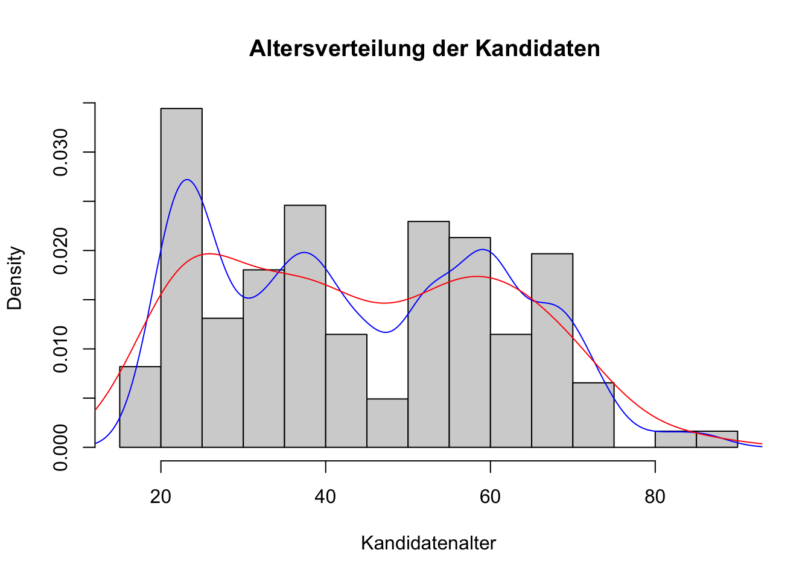
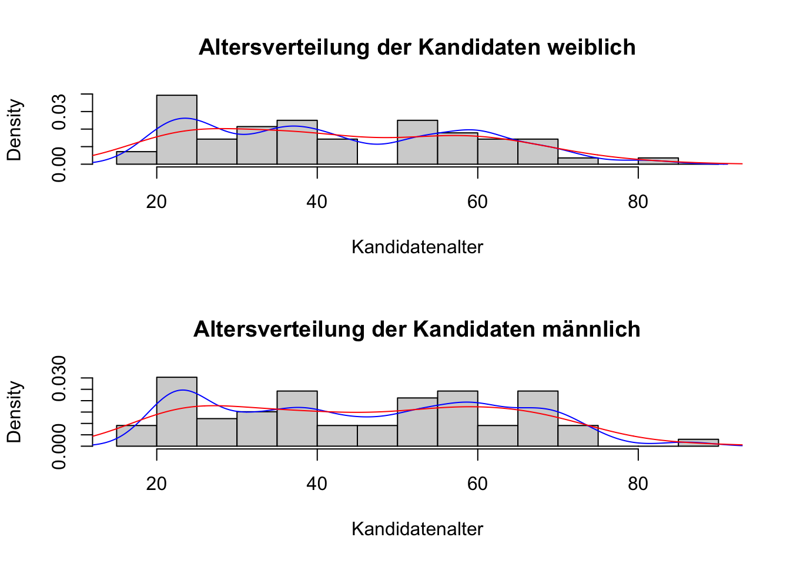

Code
library(data.tree)
library(dplyr, warn.conflicts = FALSE)
library(philentropy)
library(readxl, warn.conflicts = FALSE)
distinctness <- function(x) philentropy::H(table(x, useNA = 'ifany')/length(x)) / log(length(x), 2)Reinhold Koch
October 30, 2023
On 2023-10-22 Nationalratswahlen took place in Switzerland, so also in Basel. The results can be seen on https://www.staatskanzlei.bs.ch/politische-rechte/wahlen-abstimmungen/wahlen-2023.html including the protocols how the 4 Basel seats in the Nationalrat were assigned.
A nice open government data service are the downloadable vote counts from a link on this page. As the Swiss election system is far from simple I thought it informativ to look into the vote counts and see whether I could compute the election results myself and see whether I arrive at the same results as the Basel Staatskanzlei.
If not already in the active R session, I download the Excel file containing the vote counts. Excel file, because it is type safe (“01” != 1) and provides a familiar table format.
This is a pretty wide data table with 90 columns. A description of the columns can be found as “Datensatzschema” in the tab “Information” on https://data.bs.ch/explore/dataset/100281/information. The first columns contain constant values, like wahlbezeichnung “Wahl von vier Mitgliedern des Nationalrates”.
To find and remove such columns I employ the entropy of a column’s values. The distinctness() function defined above returns 0 for columns with constant values and 1 for columns that have a different value for each row in the table (row identifying columns).
Among the remaining 85 columns there are 3 that identify Wahlkreise. I am not interested in the individual Wahlkreise (electoral district), but in the “Kanton Basel-Stadt”. So I split dat1 accordingly and concentrate on this pseudo Wahlkreis.
Auslandschweizer Gemeinde Bettingen Gemeinde Riehen Kanton Basel-Stadt Stadt Basel
122 122 122 122 122 [1] 122 85There are a number of constant columns in the kanton data table. Like with the original data table I move them out to a separate table.
[1] 122 67The entropy shows that the candidates’ name and its equivalents kandidaten_nr and personen_id uniquely determine a single row in the kanton table.
Just for fun let us have a look at the distribution of the candidates’ ages:
## age distribution of candidates
age_distr <- function(dat, dataspec=NULL) {
hist(dat$alter_am_jahresende_2023, freq = FALSE,
main = paste('Altersverteilung der Kandidaten', dataspec), xlab = 'Kandidatenalter',
breaks = seq(15,90,5))
lines(density(dat$alter_am_jahresende_2023, adjust=.5), col='blue')
lines(density(dat$alter_am_jahresende_2023), col='red')
}
age_distr(kanton)

Back to the main topic: number of votes. How many did each candidate collect?
Naively one could imagine the seats go to the 4 candidates with the most votes - but that ignores the intention to try to assign seats in a fashion that mirrors the votes for lists; here in Switzerland the most decisive seat distribution factor are the votes for a “Listenverbindung”.
We have 32 lists, most of them sent in 4 candidates:
01 03 04 05 06 07 08 09 10 11 12 14 17 18 20 21 22 23 24 25 26 27 28 30 31 32 33 34 35 36 37 38
4 4 4 4 4 4 4 3 4 3 4 2 4 4 4 4 4 4 4 4 4 4 3 4 3 4 4 4 4 4 4 4 (lists <- kanton %>%
group_by(listen_nr, hlv_nr, ulv_nr, partei_id, parteikurzbezeichnung, parteibezeichnung) %>%
summarise(listenstimmen=mean(kandidatenstimmen_unveranderte_wahlzettel+kandidatenstimmen_veranderte_wahlzettel+
zusatzstimmen_unveranderte_wahlzettel+zusatzstimmen_veranderte_wahlzettel),
kandidates=n()))`summarise()` has grouped output by 'listen_nr', 'hlv_nr', 'ulv_nr', 'partei_id',
'parteikurzbezeichnung'. You can override using the `.groups` argument.Looking at the distinctiveness of the columns in table lists we see:
kandidates hlv_nr ulv_nr partei_id
0.1476127 0.3406070 0.5857458 0.7751614
listen_nr parteikurzbezeichnung parteibezeichnung listenstimmen
1.0000000 1.0000000 1.0000000 1.0000000 listen_nr, parteikurzbezeichnung, and parteibezeichnung all identify uniquely the lists. What partei_id is supposed to designate escapes me, the “Datensatzschema” from https://data.bs.ch/explore/dataset/100281/information does not help.
There are Hauptlistenverbindungen and Unterlistenverbindungen, though these are not mandatory for lists, they generate a tree structure with 3 major blocks competing for 4 seats.
Analysis of a values in tree structures is not mainstream in R. I employ the package data.tree to do so and first need to construct another column in table lists that indicates the position in the tree:
levelName parteikurzbezeichnung
1 basel
2 ¦--1
3 ¦ ¦--1
4 ¦ ¦ ¦--01 FDP
5 ¦ ¦ ¦--06 JFDP
6 ¦ ¦ °--26 FDP+
7 ¦ ¦--2
8 ¦ ¦ ¦--03 LDP
9 ¦ ¦ ¦--23 JLB
10 ¦ ¦ °--34 LDP-Gew
11 ¦ ¦--04 EVP
12 ¦ ¦--4
13 ¦ ¦ ¦--07 Mitte
14 ¦ ¦ ¦--22 JMITTE
15 ¦ ¦ °--36 Mitte60+
16 ¦ °--6
17 ¦ ¦--10 GLP
18 ¦ ¦--25 JGLP
19 ¦ ¦--32 GLP-K-U
20 ¦ ¦--33 GLP-B
21 ¦ ¦--35 GLP-R-E
22 ¦ ¦--37 GLP-KMU
23 ¦ °--38 GLP-I
24 ¦--2
25 ¦ ¦--3
26 ¦ ¦ ¦--05 SP
27 ¦ ¦ ¦--20 JUSO
28 ¦ ¦ °--24 SP60+
29 ¦ °--5
30 ¦ ¦--08 BGB
31 ¦ ¦--17 Basta-rm
32 ¦ ¦--21 jgb
33 ¦ °--27 BastA-jA
34 ¦--3
35 ¦ ¦--09 EDU
36 ¦ °--7
37 ¦ ¦--12 SVP
38 ¦ ¦--18 JSVP
39 ¦ ¦--30 SVP-Gew
40 ¦ °--31 SVP60+
41 ¦--11 PdA
42 ¦--14 VA
43 °--28 MVThree lists, PdA, VA, and MV, do not belong to any Listenverbindung. There are three Hauptlistenverbindungen:
among which the seats have to be distributed.
1 2 3 11 14 28
68 28 18 3 2 3 Extensive use of Listenverbindungen blows up the number of candidates; Hauptlistenverbindung 1 comes with 68 of these!
How many votes did the Hauptlistenverbindungen and the Einzellisten come up with?
2 1 3 28 11 14
109934 77354 31600 2163 1933 1690 First step in seat distribution is to determine the quorum: the number of votes is divided by number of seats plus 1, then the next higher integer number is set as quorum. The integer part of the division of the votes of Hauptlistenverbindungen by the quorum indicates number of seats given to the Hauplistenverbindung.
It is possible that this first round does not distribute all seats - as is the case here. Votes of the Hauptlistenverbindung then are divided by 1 plus number of seats received and the remaining seat goes to the Hauptlistenverbindung with the highest quotient, here 1.
[1] 44935 2 1 3 28 11 14
2 1 0 0 0 0 1 2 3 28 11 14
38677.00 36644.67 31600.00 2163.00 1933.00 1690.00 Within the Hauptlistenverbindung the seats get distributed according to the same multi-step process first to Unterlistenverbindung, then Liste.
Detailed protocols of this process are provided by the Basel Staatskanzlei, see https://www.staatskanzlei.bs.ch/dam/jcr:302a9016-ef8c-41b8-888a-f6d7332ff1ab/Ausw_5a.pdf.
For a general picture what Swiss voters can do with their ballot paper, see https://www.srf.ch/news/schweiz/wahlhilfe/kumulieren-und-panaschieren-so-waehlt-man-mit-listen.
---
title: "Nationalratswahlen Basel 2023"
author: "Reinhold Koch"
date: "2023-10-30"
output: html_document
---
```{r setup, include=FALSE}
knitr::opts_chunk$set(echo = TRUE)
options(width = 100)
```
## Nationalratswahlen Basel 2023
On 2023-10-22 Nationalratswahlen took place in Switzerland, so also in Basel.
The results can be seen on https://www.staatskanzlei.bs.ch/politische-rechte/wahlen-abstimmungen/wahlen-2023.html
including the protocols how the 4 Basel seats in the Nationalrat were assigned.
A nice open government data service are the downloadable vote counts from a link on this page.
As the Swiss election system is far from simple I thought it informativ to look into the vote counts
and see whether I could compute the election results myself and see whether I arrive at the same results
as the Basel Staatskanzlei.
```{r initialise}
library(data.tree)
library(dplyr, warn.conflicts = FALSE)
library(philentropy)
library(readxl, warn.conflicts = FALSE)
distinctness <- function(x) philentropy::H(table(x, useNA = 'ifany')/length(x)) / log(length(x), 2)
```
### Data download
If not already in the active R session, I download the Excel file containing the vote counts.
Excel file, because it is type safe ("01" != 1) and provides a familiar table format.
```{r, download}
# read in data if not already present
if (!exists('dat0')) {
download.file('https://data.bs.ch/api/explore/v2.1/catalog/datasets/100281/exports/xlsx', tf <- tempfile(fileext = '.xlsx'))
dat0 <- readxl::read_xlsx(tf)
}
dim(dat0)
```
### Data scrubbing
This is a pretty wide data table with 90 columns.
A description of the columns can be found as "Datensatzschema" in the tab "Information" on
https://data.bs.ch/explore/dataset/100281/information.
The first columns contain constant values, like **wahlbezeichnung** "Wahl von vier Mitgliedern des Nationalrates".
To find and remove such columns I employ the entropy of a column's values.
The **distinctness()** function defined above returns **0** for columns with constant values
and **1** for columns that have a different value for each row in the table (row identifying columns).
```{r scrub}
# determine constant columns, move them to "general" dataframe
entropy0 <- sapply(dat0, distinctness)
general <- unique(dat0[,names(entropy0[entropy0==0])])
general
dat1 <- dat0[, setdiff(names(dat0), names(general))]
dim(dat1)
```
## Wahlkreise
Among the remaining 85 columns there are 3 that identify Wahlkreise.
I am not interested in the individual Wahlkreise (electoral district), but in
the "Kanton Basel-Stadt".
So I split dat1 accordingly and concentrate on this pseudo Wahlkreis.
```{r wahlkreise}
## find right Wahlkreis for Kanton
table(dat1$wahlkreisbezeichnung)
# split dat1 by Wahlkreise
wahlkreise <- split(dat1, dat1$wahlkreisbezeichnung)
# concentrate on Kanton
kanton0 <- wahlkreise[['Kanton Basel-Stadt']]
dim(kanton0)
```
### scrub kanton
There are a number of constant columns in the kanton data table.
Like with the original data table I move them out to a separate table.
```{r scrub_kanton}
entropy_kanton <- sapply(kanton0, distinctness)
kanton_general <- unique(kanton0[,names(entropy_kanton[entropy_kanton==0])])
kanton <- kanton0[, setdiff(names(kanton0), names(kanton_general))]
dim(kanton)
```
The entropy shows that the candidates' name and its equivalents kandidaten_nr and personen_id uniquely
determine a single row in the kanton table.
### excursion: distribution of candidate ages
Just for fun let us have a look at the distribution of the candidates' ages:
```{r age_distribution}
## age distribution of candidates
age_distr <- function(dat, dataspec=NULL) {
hist(dat$alter_am_jahresende_2023, freq = FALSE,
main = paste('Altersverteilung der Kandidaten', dataspec), xlab = 'Kandidatenalter',
breaks = seq(15,90,5))
lines(density(dat$alter_am_jahresende_2023, adjust=.5), col='blue')
lines(density(dat$alter_am_jahresende_2023), col='red')
}
age_distr(kanton)
# by gender
par(mfrow=c(2,1))
age_distr(subset(kanton, geschlecht=='F'), 'weiblich')
age_distr(subset(kanton, geschlecht=='M'), 'männlich')
par(mfrow=c(1,1))
```
## candidate votes
Back to the main topic: number of votes. How many did each candidate collect?
```{r votes}
kanton %>%
dplyr::select(kandidaten_nr, parteikurzbezeichnung, bisher, gewahlt, ganzer_name, stimmen_total_aus_wahlzettel, hlv_nr) %>%
dplyr::arrange(desc(stimmen_total_aus_wahlzettel))
```
Naively one could imagine the seats go to the 4 candidates with the most votes - but that ignores
the intention to try to assign seats in a fashion that mirrors the votes for lists;
here in Switzerland the most decisive seat distribution factor are the votes for a
"Listenverbindung".
# Listen and Listenverbindungen
We have 32 lists, most of them sent in 4 candidates:
```{r lists}
table(kanton$listen_nr, useNA = 'ifany') # 32 lists run
(lists <- kanton %>%
group_by(listen_nr, hlv_nr, ulv_nr, partei_id, parteikurzbezeichnung, parteibezeichnung) %>%
summarise(listenstimmen=mean(kandidatenstimmen_unveranderte_wahlzettel+kandidatenstimmen_veranderte_wahlzettel+
zusatzstimmen_unveranderte_wahlzettel+zusatzstimmen_veranderte_wahlzettel),
kandidates=n()))
```
Looking at the distinctiveness of the columns in table **lists** we see:
```{r list_distinct}
sort(sapply(lists, distinctness))
```
listen_nr, parteikurzbezeichnung, and parteibezeichnung all identify uniquely the lists.
What partei_id is supposed to designate escapes me, the "Datensatzschema" from https://data.bs.ch/explore/dataset/100281/information
does not help.
## tree structure of Listenverbindungen
There are Hauptlistenverbindungen and Unterlistenverbindungen, though these are not mandatory for lists,
they generate a tree structure with 3 major blocks competing for 4 seats.
Analysis of a values in tree structures is not mainstream in R.
I employ the package **data.tree** to do so and first need to construct another column in table
**lists** that indicates the position in the tree:
```{r listenverbindungen}
# tree structure of the lists:
lists$pathString <- paste('basel',
dplyr::coalesce(lists$hlv_nr, ''),
dplyr::coalesce(lists$ulv_nr, ''),
lists$listen_nr,
sep = '/'
)
zz <- data.tree::as.Node(lists)
print(zz, 'parteikurzbezeichnung')
```
Three lists, PdA, VA, and MV, do not belong to any Listenverbindung.
There are three Hauptlistenverbindungen:
* 1 conservatives
* 2 moderate left
* 3 SVP
among which the seats have to be distributed.
### candidates per Hauptlistenverbindung
```{r hlv_candidates}
# number of candidates per Hauptliste
zz$Do( function(x) {
x$kandidaten_total <- Aggregate(node = x,
attribute = "kandidates",
aggFun = sum)
}
)
data.tree::Get(zz$children, 'kandidaten_total')
```
Extensive use of Listenverbindungen blows up the number of candidates;
Hauptlistenverbindung 1 comes with 68 of these!
# top level votes
How many votes did the Hauptlistenverbindungen and the Einzellisten come up with?
```{r hlv_votes}
## top-level votes
(hl_votes <- sort(data.tree::Get(zz$children, function(x) data.tree::Aggregate(x, 'listenstimmen', sum)), decreasing = TRUE))
```
## seats per Hauptlistenverbindung
First step in seat distribution is to determine the quorum:
the number of votes is divided by number of seats plus 1, then the next higher
integer number is set as quorum.
The integer part of the division of the votes of Hauptlistenverbindungen by the quorum
indicates number of seats given to the Hauplistenverbindung.
It is possible that this first round does not distribute all seats - as is the case here.
Votes of the Hauptlistenverbindung then are divided by 1 plus number of seats received
and the remaining seat goes to the Hauptlistenverbindung with the highest quotient,
here 1.
```{r hlv_seats}
# 1st seat distribution
(quorum1 <- ceiling(sum(hl_votes)/(4+1)))
(seats1 <- floor(hl_votes/quorum1))
# 2nd seat distribution
sort(hl_votes/(1+seats1), decreasing = TRUE)
```
Within the Hauptlistenverbindung the seats get distributed according to the same
multi-step process first to Unterlistenverbindung, then Liste.
Detailed protocols of this process are provided by the Basel Staatskanzlei, see
https://www.staatskanzlei.bs.ch/dam/jcr:302a9016-ef8c-41b8-888a-f6d7332ff1ab/Ausw_5a.pdf.
For a general picture what Swiss voters can do with their ballot paper, see
https://www.srf.ch/news/schweiz/wahlhilfe/kumulieren-und-panaschieren-so-waehlt-man-mit-listen.